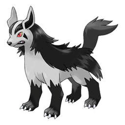
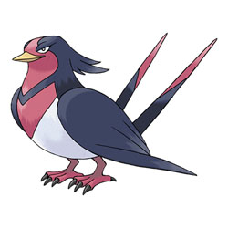

|  | A Mightyena es muy fácil prever cuándo va a atacar Mightyena; se pone a gruñir con fuerza y se estira. Este Pokémon da unos mordiscos tremendos con los afilados colmillos que tiene. |
|
|
|  | Swellow vuela muy alto dibujando elegantes arcos en el cielo. Este Pokémon se sumerge en el agua con rapidez y eficacia en cuanto detecta una presa. Con las garras, atrapa a la desdichada víctima y no la deja huir. |
|